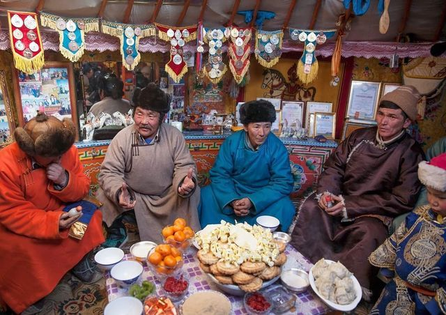

Festivals and Evenets in Mongolia
Mongolia is home to vibrant festivals taht showcase its rich history, traditions, and unique lifestyle. Here are some of the most celebrated events.:
Golden Eagle Festival
- When:October
- Where:Bayan-Ulgii Province
- Highlights:Watch the hunters demonstrate their skills in training golden eagles. This is a breathtaking event in the ALtai Mountains.
Tsagaan Sar (Lunar New Year)
- When:Late January or February (date varies)
- Where:Nationwide
- Highlights:Experience traditional family gatherings, feast on buuz(dumplings), and enjoy blessings for the year ahead. 
Camel Festival
- When:March
- Where:Gobi Desert
- Highlights:Admire camel races, cultural performances, and local crafts celebrating the Bactrian camel.